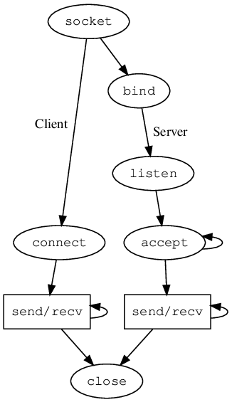

Code Walkthrough

Blocking write
packetdrill/gtests/net/tcp/blocking/blocking-write.pkt
// Test for blocking write.
--tolerance_usecs=10000
`../common/defaults.sh
../common/set_sysctls.py /proc/sys/net/ipv4/tcp_min_tso_segs=10
`
// Establish a connection.
0 socket(..., SOCK_STREAM,PROTO_TCP) = 3
+0 setsockopt(3, SOL_SOCKET, SO_REUSEADDR, [1], 4) = 0
+0 bind(3, ..., ...) = 0
+0 listen(3, 1) = 0
+.1 < S 0:0(0) win 50000 <mss 1000,nop,wscale 0>
+0 > S. 0:0(0) ack 1 <mss 1460,nop,wscale 8>
+.1 < . 1:1(0) ack 1 win 50000
+0 accept(3, ..., ...) = 4
// Kernel doubles our value -> sk->sk_sndbuf is set to 42000
+0 setsockopt(4, SOL_SOCKET, SO_SNDBUF, [21000], 4) = 0
+0 getsockopt(4, SOL_SOCKET, SO_SNDBUF, [42000], [4]) = 0
// A write of 60000 does not block.
+0...0.300 write(4, ..., 61000) = 61000 // this write() blocks
+.1 < . 1:1(0) ack 10001 win 50000
+.1 < . 1:1(0) ack 30001 win 50000
// This ACK should wakeup the write(). An ACK of 35001 does not.
+.1 < . 1:1(0) ack 36001 win 50000
// Reset to sysctls defaults.
`/tmp/sysctl_restore_${PPID}.sh`
tcpdump -i any -n -ttt tcp port 8080
// Three-way handshake
1 0.000000 remote:54321 > local:8080: [S], seq 0, win 50000, options [mss 1000,nop,wscale 0], length 0
2 0.000640 local:8080 > remote:54321: [S.], seq 12345, ack 1, win 65535, options [mss 1460,nop,wscale 8], length 0
3 0.111259 remote:54321 > local:8080: [.], ack 1, win 50000, length 0
// cwnd = 10, mss = 1000, so send 10 * 1000 then wait for ACK.
4 0.017588 local:8080 > remote:54321: [P.], seq 1:5001, ack 1, win 256, length 5000
5 0.000199 local:8080 > remote:54321: [P.], seq 5001:10001, ack 1, win 256, length 5000
6 0.101236 remote:54321 > local:8080: [.], ack 10001, win 50000, length 0
// slow-start, increase cwnd per ACK. cwnd = 20, so send 20 * 1000 then wait for ACK.
7 0.000573 local:8080 > remote:54321: [P.], seq 10001:20001, ack 1, win 256, length 10000
8 0.000276 local:8080 > remote:54321: [P.], seq 20001:30001, ack 1, win 256, length 10000
9 0.099876 remote:54321 > local:8080: [.], ack 30001, win 50000, length 0
// slow-start, again. write() now blocks.
10 0.000490 local:8080 > remote:54321: [P.], seq 30001:35001, ack 1, win 256, length 5000
11 0.000456 local:8080 > remote:54321: [P.], seq 35001:45001, ack 1, win 256, length 10000
12 0.000182 local:8080 > remote:54321: [P.], seq 45001:55001, ack 1, win 256, length 10000
13 0.000157 local:8080 > remote:54321: [P.], seq 55001:60001, ack 1, win 256, length 5000
14 0.098661 remote:54321 > local:8080: [.], ack 36001, win 50000, length 0
// the previous ACK unblocks write().
15 0.001139 local:8080 > remote:54321: [P.], seq 60001:61001, ack 1, win 256, length 1000
16 0.325737 local:8080 > remote:54321: [.], seq 36001:37001, ack 1, win 256, length 1000 // Re-xmit
17 0.038498 local:8080 > remote:54321: [F.], seq 61001, ack 1, win 256, length 0
tcp_sendmsg(size=61k), cwnd=10
size_goal = 25k
1. copy 25k to skb
sk_wmem_queued = 1280 + 25000 = 26280
tcp_push_one
tcp_write_xmit
skb1 = 25k, pfrag = 25000/32768
cwnd_quota = 5
tso_fragment splits skb to 5k + 20k, sk_wmem_queued += 1280, skb1 = 5k, skb2 = 20k
tcp_transmit_skb(5k)
sk->tcp_rtx_queue.insert(skb1)
2. copy 5k, copy = size_goal - tcp_write_queue_tail(sk)->len = 25k - 20k = 5k
skb2 += 5k, pfrag = 30000/32768
sk_wmem_queued = 27560 + 5000 = 32560
__tcp_push_pending_frames
tcp_write_xmit
cwnd_quota = 5
tso_fragment splits skb to 5k + 20k, sk_wmem_queued += 1280, skb2 = 5k, skb3 = 20k
tcp_transmit_skb(5k)
sk->tcp_rtx_queue.insert(skb2)
3. copy 2768 (copied=32768)
sk_wmem_queued = 33840 + 2768 = 36608
sk->sk_write_queue = [skb3(len=22768)]
4. copy 2232 (copied=35000), size_goal - skb->len = 2232
alloc a new page frag, WHY no new skb?
sk_wmem_queued = 36608 + 2232 = 38840
tcp_push_one
cwnd_quota=0
5. copy 25k
alloc a new skb, sk_wmem_queued += 1280
sk_wmem_queued = 40120 + 25000 = 65120
tcp_push_one
cwnd_quota=0
(copied=60k)
6. trying to copy remaining 1k
sk->sk_wmem_queued (65120) > sk->sk_sndbuf (42000)
wait_for_space
1st ack 10000, cwnd=20
tcp_rcv_established
tcp_ack
tcp_clean_rtx_queue
tcp_rtx_queue_unlink_and_free
sk_wmem_free_skb
tcp_data_snd_check
tcp_push_pending_frames
tcp_write_xmit
tcp_transmit_skb(10k)
tcp_transmit_skb(10k)
sk->sk_wmem_queued: 65120 -> 55120
tcp_check_space
tcp_new_space
sk_stream_write_space, stream_wspace=-13120 stream_min_wspace=27560)
2nd ack 30000, cwnd=40
tcp_write_xmit
tcp_transmit_skb(5k)
tcp_transmit_skb(10k)
tcp_transmit_skb(10k)
tcp_transmit_skb(5k)
sk->sk_wmem_queued: 55120 -> 35120
sk_stream_write_space, stream_wspace=6880 stream_min_wspace=17560)
3rd ack 36000
sk->sk_wmem_queued: 35120 -> 27840
sk_stream_write_space, stream_wspace=14160 stream_min_wspace=13920
__sk_stream_is_writeable=true, wake up
tcp_sendmsg wakes up
tcp_transmit_skb(1k)
Call trace of SYN, SYNACK
__do_softirq -> net_rx_action -> napi_poll -> virtnet_poll -> virtqueue_napi_complete
-> napi_complete_done -> gro_normal_list -> netif_receive_skb_list_internal
-> __netif_receive_skb_list -> __netif_receive_skb_list_core -> __netif_receive_skb_list_ptype
-> ip_list_rcv -> ip_sublist_rcv -> ip_list_rcv_finish -> ip_sublist_rcv_finish
-> dst_input -> ip_local_deliver -> ip_local_deliver_finish ->
IPv4
ip_local_deliver_finish -> ip_protocol_deliver_rcu -> tcp_v4_rcv -> tcp_v4_do_rcv
-> tcp_rcv_state_process -> tcp_v4_conn_request -> tcp_conn_request -> tcp_v4_send_synack
-> ip_output
__do_softirq -> net_rx_action -> napi_poll -> process_backlog
-> __netif_receive_skb -> __netif_receive_skb_one_core
-> ip6_input ->
IPv6
ip6_input -> ip6_input_finish -> ip6_protocol_deliver_rcu -> tcp_v6_rcv -> tcp_v6_do_rcv
-> tcp_rcv_state_process -> tcp_v6_conn_request -> tcp_conn_request -> tcp_v6_send_synack
-> ip6_xmit -> dst_output -> ip6_output
Call trace of read(2)
entry_SYSCALL_64 -> do_syscall_64 -> ksys_read -> vfs_read -> new_sync_read -> call_read_iter
-> sock_read_iter -> sock_recvmsg -> sock_recvmsg_nosec -> inet_recvmsg -> tcp_recvmsg
Call trace of readv(2)
entry_SYSCALL_64 -> do_syscall_x64 -> __x64_sys_readv -> __do_sys_readv -> do_readv -> vfs_readv
-> do_iter_read -> do_iter_readv_writev -> call_read_iter
-> sock_read_iter -> sock_recvmsg -> sock_recvmsg_nosec -> inet_recvmsg -> tcp_recvmsg
Call trace of recvfrom
entry_SYSCALL_64 -> do_syscall_64 -> __x64_sys_recvfrom -> __se_sys_recvfrom -> __do_sys_recvfrom
-> __sys_recvfrom -> sock_recvmsg
Call trace of recvmsg
entry_SYSCALL_64 -> do_syscall_64 -> __sys_recvmsg -> ___sys_recvmsg -> ____sys_recvmsg
-> sock_recvmsg
Call trace of sendto
entry_SYSCALL_64 -> do_syscall_64 -> __x64_sys_sendto -> __se_sys_sendto -> __do_sys_sendto
-> __sys_sendto -> sock_sendmsg
Call trace of sendmsg
entry_SYSCALL_64 -> do_syscall_64 -> __sys_sendmsg -> ___sys_sendmsg -> ____sys_sendmsg
-> sock_sendmsg
Call trace of write(2)
entry_SYSCALL_64 -> do_syscall_64 -> ksys_write -> vfs_write -> new_sync_write -> call_write_iter
-> sock_write_iter -> sock_sendmsg -> sock_sendmsg_nosec -> tcp_sendmsg -> tcp_sendmsg_locked
-> tcp_push -> __tcp_push_pending_frames -> tcp_write_xmit -> tcp_transmit_skb
-> __tcp_transmit_skb -> ip_queue_xmit -> __ip_queue_xmit -> ip_local_out -> dst_output
-> ip_output -> ip_finish_output -> __ip_finish_output -> ip_finish_output2 -> neigh_output
IPv6
__tcp_transmit_skb -> inet6_csk_xmit -> ip6_xmit -> dst_output -> ip6_output
-> ip6_finish_output2 -> neigh_output -> neigh_hh_output -> dev_queue_xmit
-> __dev_queue_xmit -> __dev_xmit_skb -> qdisc_run
-> __qdisc_run -> qdisc_restart -> sch_direct_xmit -> dev_hard_start_xmit
-> xmit_one -> netdev_start_xmit -> __netdev_start_xmit -> mlx4_en_*
Call trace of receiving ACK from packet 6
ip_local_deliver_finish -> ip_protocol_deliver_rcu -> tcp_v4_rcv -> tcp_v4_do_rcv
-> tcp_rcv_established -> tcp_data_snd_check -> tcp_push_pending_frames
-> __tcp_push_pending_frames -> ...
Call trace of close(2)
__fput -> sock_close -> __sock_release -> inet_release -> tcp_close -> tcp_send_fin
-> __tcp_push_pending_frames -> tcp_write_xmit -> tcp_transmit_skb -> ...